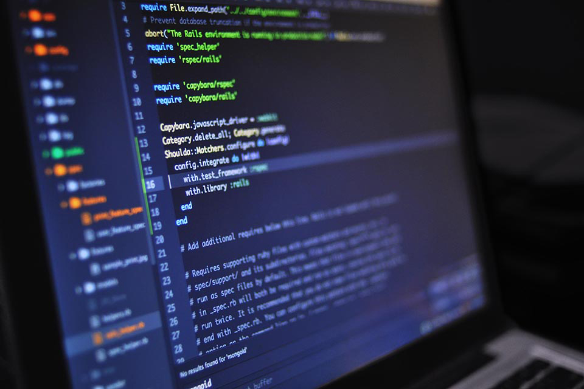

Στόχος
Δημιουργία παιχνιδιού στο πλαίσιο του Global Game Jam στην Πάτρα.

Παιχνίδι που αναπτύχθηκε σε Global Game Jam στην Πάτρα, με γρήγορο πρωτότυπο και ομαδική εργασία.

Δημιουργία παιχνιδιού στο πλαίσιο του Global Game Jam στην Πάτρα.
Χρήση Unity για γρήγορη ανάπτυξη πρωτοτύπου και συνεργασία με την ομάδα.
Δημιουργία πρωτοτύπων, επικοινωνία και βασικές αρχές ανάπτυξης παιχνιδιών.
Η εικόνα ενδέχεται να είναι ενδεικτική. Σύνδεσμοι προς πηγαίο κώδικα ή ζωντανή επίδειξη θα προστεθούν μόνο μετά από επιβεβαίωση.